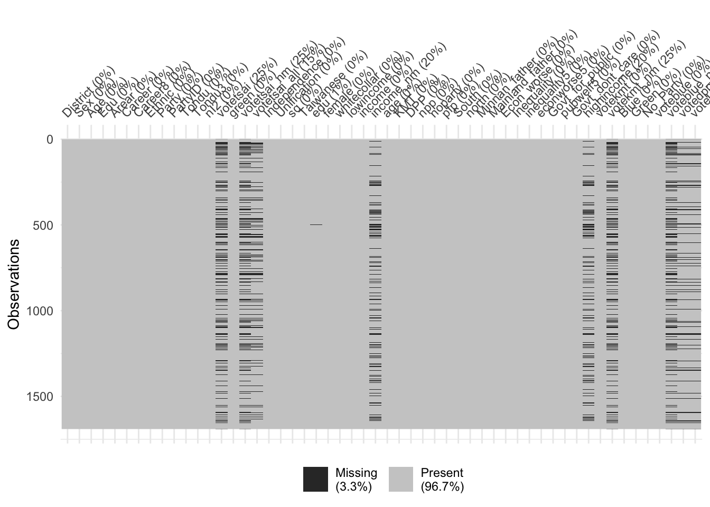
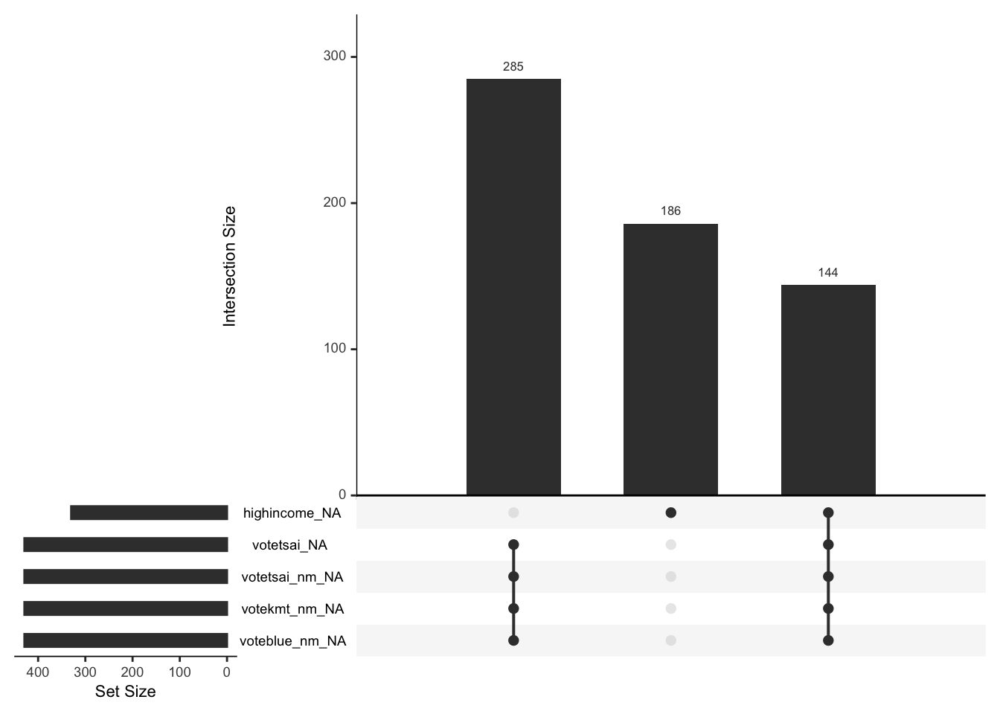
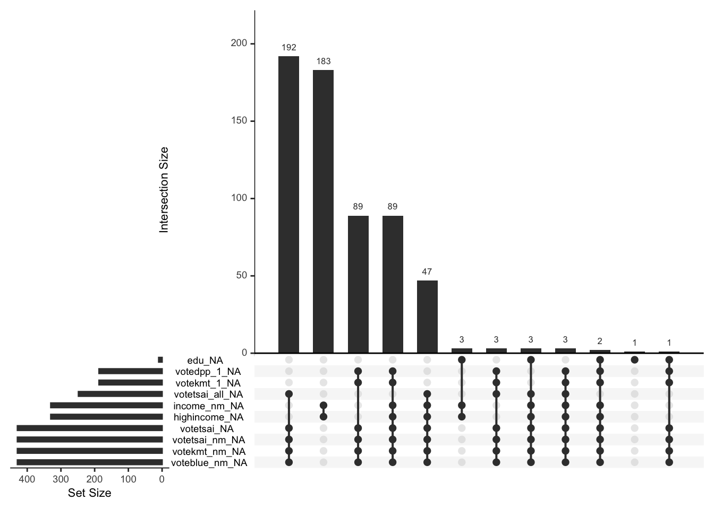
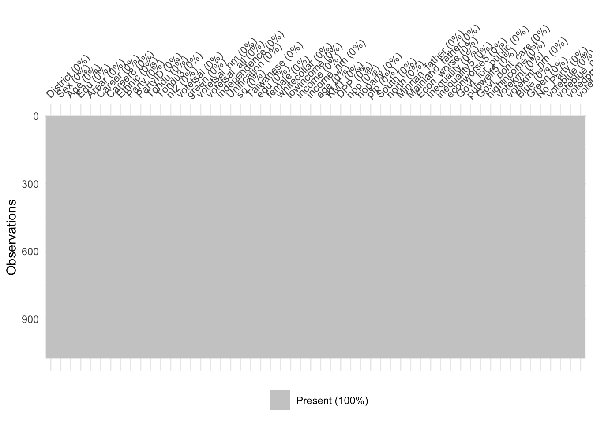
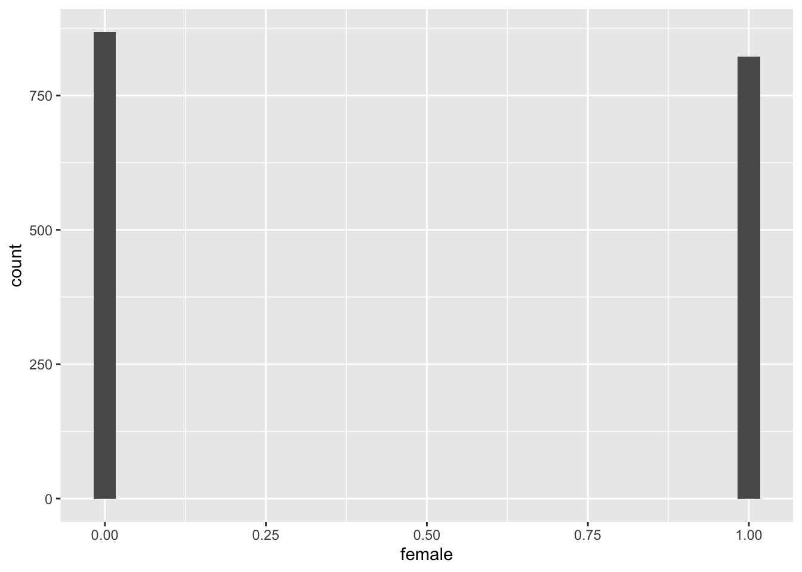
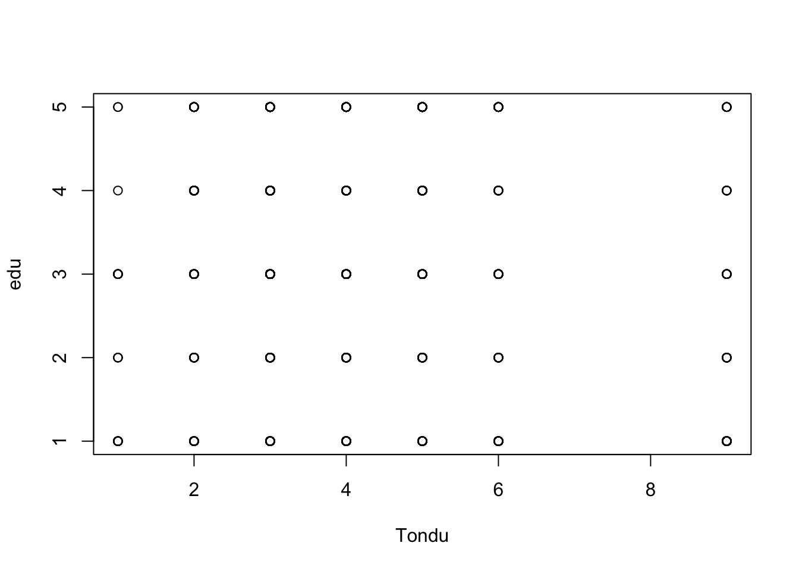
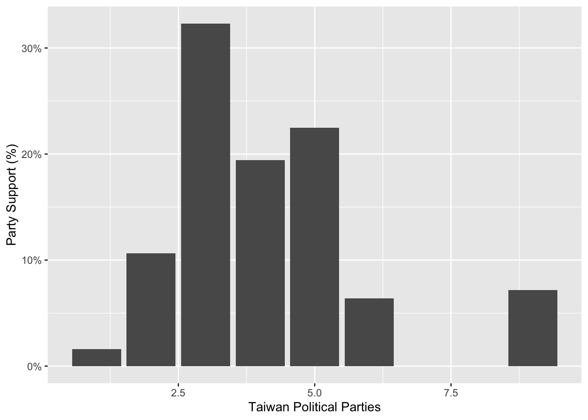

# loading the data set
library(haven)
TEDS_2016 <- read_stata("https://github.com/datageneration/home/blob/master/DataProgramming/data/TEDS_2016.dta?raw=true")
# to read from local drive
# TEDS_2016 <- read_dta("/Users/arslankhalid/Desktop/UTD/Year 3/Spring 2023/Knowledge Mining/Assignments/TEDS_2016.dta")Exploratory Data Analysis
EDA
An exploratory data analysis using the “TEDS2016” data set.
One of the first things to do when starting an exploratory analysis is to check the data for missing values.
#install.packages("UpSetR")
#install.packages("naniar")
library("naniar")
library("UpSetR")
# how many missing variables?
n_var_miss(TEDS_2016)[1] 10# specific visualiation of the amount of missing data
vis_miss(TEDS_2016)
# visualise the patterns of missingness, or rather the combinations of missingness across cases
# only looks at 5 combinations
gg_miss_upset(TEDS_2016) 
# to look ar all intersections of missing variables
gg_miss_upset(TEDS_2016, nsets = n_var_miss(TEDS_2016)) 
The figure above shows the most frequent interactions of missing variables. The next step is to see if there is a pattern here and if that affects our analysis in any way. We could consider removing rows that are completely missing. Alternatively, we could choose to drop rows that contain “NA”. This is shown below.
#install.packages("tidyr")
library("tidyr")
#Remove rows that contains all NA's
df <- TEDS_2016[rowSums(is.na(TEDS_2016)) != ncol(TEDS_2016), ]
#Remove rows with NA's using drop_na()
df <- TEDS_2016 %>% drop_na()
# check missing variables again
n_var_miss(df)[1] 0# visual confirmation
vis_miss(df)
Next we can begin to explore the relationship between Tondu and other variables including female, DPP, age, income, edu, Taiwanese and Econ_worse.
library(ggplot2)
ggplot(TEDS_2016, aes(x=female)) +
geom_histogram()`stat_bin()` using `bins = 30`. Pick better value with `binwidth`.
plot(edu ~ Tondu, data = TEDS_2016)
?barplot
# we have to co nvert the variable to a factor and then add labels for the graph to be more meaningful
ggplot(TEDS_2016, aes(Tondu)) +
geom_bar(aes(y = (..count..)/sum(..count..))) +
scale_y_continuous(labels=scales::percent) +
ylab("Party Support (%)") +
xlab("Taiwan Political Parties")Warning: The dot-dot notation (`..count..`) was deprecated in ggplot2 3.4.0.
ℹ Please use `after_stat(count)` instead.Don't know how to automatically pick scale for object of type
<haven_labelled/vctrs_vctr/double>. Defaulting to continuous.
TEDS_2016$Tondu<-as.numeric(TEDS_2016$Tondu,labels=c("Unification now”, “Status quo, unif. in future”, “Status quo, decide later", "Status quo forever", "Status quo, indep. in future", "Independence now”, “No response"))
class(TEDS_2016$Tondu)[1] "numeric"summary(TEDS_2016$Tondu) Min. 1st Qu. Median Mean 3rd Qu. Max.
1.000 3.000 4.000 4.127 5.000 9.000 --------
Class Notes
February 15, 2023
- Start EDA with Frequency table
Gives you the count and categories in data.
- Histogram
You can visualize the data count. Divides the x-axis in to bins and uses the heignt of a bar to display the number of observations. If continuous data do not show a normal distribution then you should investigate why that is the case.
- Charts
You can use the following figure to decide which chart to choose based on the type of variables you are analyzing.